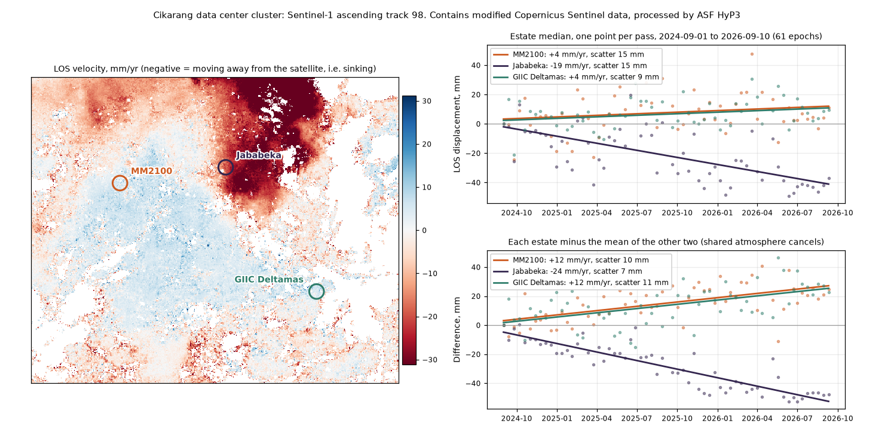

Is the ground under Cikarang's data centers moving?
Cikarang, in Bekasi regency east of Jakarta, now carries most of Indonesia's new data center capacity. It sits on the same young alluvial plain that has made North Jakarta one of the fastest sinking cities on record. We processed two years of free Sentinel-1 radar over three of the estates and asked what the archive alone can say about the ground under them.
The questionWhy a data center operator would care
A hyperscale hall does not fail because the whole site goes down by a centimetre. It fails because one part of it goes down faster than the part next to it. Differential settlement racks a slab, pulls a raised floor out of level, and puts a cooling pipe run in tension. The ground movement that matters is therefore a gradient across a few hundred metres, not an absolute number against sea level.
That is convenient, because a gradient is also the thing satellite radar measures best. An interferogram is a difference by construction. What it struggles with is the absolute rate, which is where the atmosphere and the choice of reference point get in.
What we processedTwo years of ascending track 98
Sentinel-1 ascending track 98, bursts 098_210452_IW2 and 098_210453_IW2, every 12-day pass from 1 September 2024 to 10 September 2026. That is 61 epochs. We ordered 119 two-burst interferograms from ASF HyP3, consecutive pairs plus skip-one pairs so the network stays connected if one pass decorrelates, at 10 by 2 looks, about 40 m on the ground. All 119 jobs came back and all 119 were usable.
The stack was inverted per pixel by coherence-weighted least squares over 186,656 coherent pixels. Every interferogram is referenced to the median of 23,553 coherent pixels in a strip south of latitude −6.377, away from the estates. Each estate figure below is the median of coherent pixels within 400 m of the estate point, so it is an estate-level number covering roofs, roads and open ground, not a building footprint.

What came outOne estate apart from the other two
| Estate | Data center tenants | Rate, mm/yr | Pixel spread, p10 to p90 | Pixels | Scatter |
|---|---|---|---|---|---|
| MM2100 Industrial Town | DCI Indonesia JK1 to JK3 | +4.3 ± 3.2 | −0.8 to +7.9 | 293 | 14.8 mm |
| Jababeka Industrial Estate | Datacomm Cikarang | −19.3 ± 3.2 | −24.2 to −13.3 | 294 | 14.9 mm |
| GIIC Kota Deltamas | Princeton Digital JC3 and JC4, EDGNEX under construction | +4.2 ± 2.0 | +0.5 to +8.3 | 310 | 9.2 mm |
Across the whole scene the median rate is −2.1 mm/yr over 152,555 pixels, with the 5th percentile at −31.2 and the 95th at +7.7. So the scene has a real subsidence tail, and Jababeka sits in it while the other two do not.
The map says something the table cannot: Jababeka is not an isolated anomaly. It sits on the southern flank of a subsiding lobe that covers the north east of the scene and extends well beyond it, which is the signature of regional groundwater drawdown rather than of anything one estate has built. The internal gradient at Jababeka is the steepest of the three, 10.9 mm/yr between the 10th and 90th percentile pixel inside an 800 m circle, against 8.7 at MM2100 and 7.8 at Kota Deltamas. On a flank, which side of the fence a building sits on starts to matter.
The real measurementWhy the difference is the number
The single-estate rates above carry a scatter of 9 to 15 mm per pass. In a humid tropical scene with no tropospheric correction, most of that is water vapour rather than ground. Water vapour is also largely common to sites a few kilometres apart, so it cancels when one estate is differenced against another. The three estates are 5.8, 8.4 and 12.2 km apart, and their series correlate at 0.35 to 0.54, which is the shared component showing up directly.
| Pair | Relative rate, mm/yr | Residual scatter |
|---|---|---|
| MM2100 minus GIIC Deltamas | +0.1 ± 2.8 | 13.2 mm |
| MM2100 minus Jababeka | +23.6 ± 1.8 | 8.5 mm |
| Jababeka minus GIIC Deltamas | −23.5 ± 2.3 | 10.9 mm |
Two things in that table matter more than the headline. The two quiet estates agree with each other to 0.1 mm/yr over two years while sitting 12.2 km apart, which is a tighter internal check than we had any right to expect and says the stack is not drifting at random. And both independent comparisons against Jababeka give the same 23.5 to 23.6 mm/yr, from two different baselines.
The limitsWhat this does not say
- The absolute rates are not calibrated. In a separate check this week over western Puerto Rico, tropical and vegetated on purpose, our own rates disagreed with 7 GNSS stations by 54 mm/yr RMS over a six-month window, an implied displacement error of about 45 mm. Spread across the two-year Cikarang window that is still of order 20 mm/yr on an absolute rate. Jababeka's −19.3 mm/yr does not clear that bar. The 23 mm/yr gradient between estates does, because the differencing removes the part of the error that is common to the scene.
- The reference strip may be moving too. Every number here is relative to a strip of ground south of the estates. If that strip is itself sinking, every rate on this page is shifted by the same amount, which is another reason the between-estate difference is the safer quantity.
- One look direction. Ascending track only. We cannot separate vertical settlement from horizontal movement without a descending stack over the same window, and the 0.8 factor above assumes the motion is purely vertical.
- No tropospheric correction. No ERA5 or GACOS delay model has been applied. That is the first thing we would add, and it is what should bring the single-estate scatter down.
- Estate level, not building level. A 400 m radius takes in roofs, car parks, roads and vacant lots. It does not tell a specific operator what their own slab is doing. Building-footprint masking needs the footprint, which needs the customer.
- Two years is short for a settlement claim. Consolidation under a new build is not linear, and a straight line fitted to 61 points cannot distinguish steady groundwater drawdown from a construction transient nearby.
NextWhat would make this sellable
Three things, in cost order. A descending stack over the same two years, which is more free data and another day of processing, and which turns line of sight into vertical and east-west. A tropospheric correction from ERA5. And one GNSS tie or a corner reflector on a customer's site, which is the only item on the list that costs real money and the only one that converts a relative gradient into an absolute rate anyone can audit.
Until that third item exists, the honest product here is a screening tool: it ranks sites against each other from free archive data in about a day, and it tells an operator which of their estates deserves an instrument. That is worth something on its own, because the instrument budget is finite and currently gets allocated by intuition.
MethodReproducing this
Sentinel-1 SLC bursts from the Copernicus archive, interferograms from ASF HyP3 running ISCE2, and about 400 lines of Python for the network build, the weighted least-squares inversion and the figures. Coherence threshold 0.3 per pair, mean coherence threshold 0.4 per pixel. Displacements are in line of sight, negative away from the satellite. Job list, urls and the full per-epoch series are in the result JSON in the repository, and we will send the pipeline to anyone who wants to check the arithmetic. Contains modified Copernicus Sentinel data 2024 to 2026, processed by ASF HyP3.